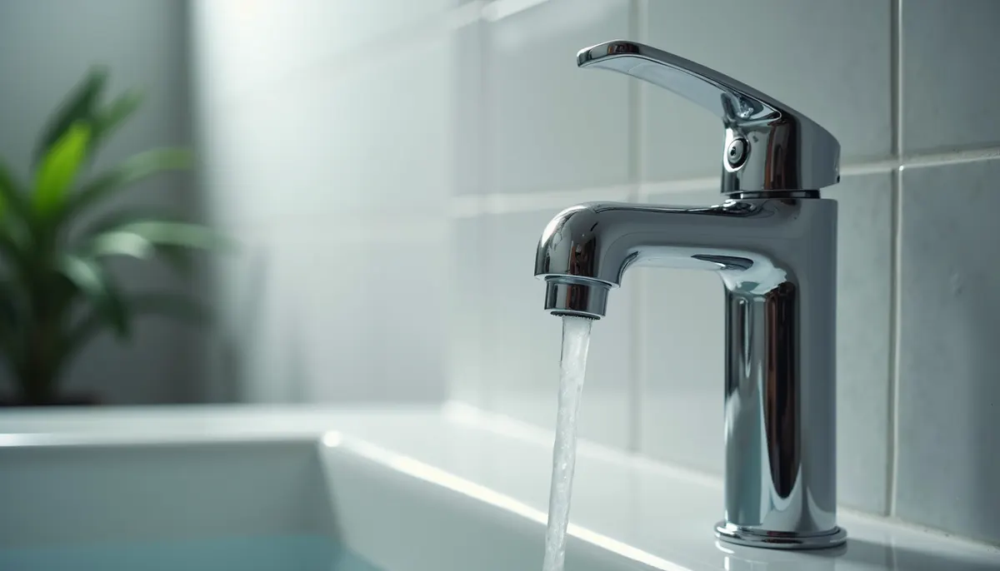
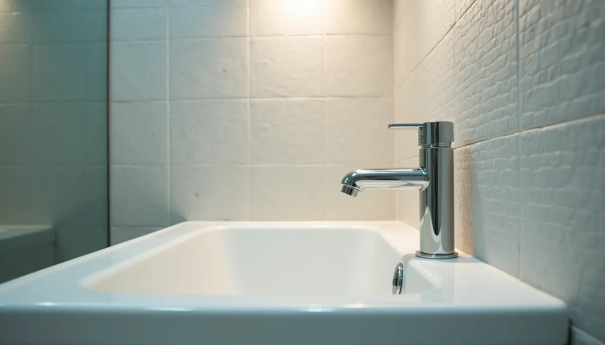
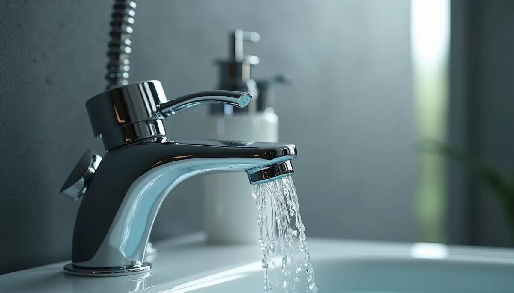

When it comes to creating a space that feels like home, the details matter—especially in areas where we spend a lot of time, like the bathroom. For many homeowners, the shower is more than just a place to clean up; it's a sanctuary where we wash away the day's stress and recharge. One crucial element that can greatly enhance this experience is the shower faucet. My journey in selecting the right brand of shower faucet taught me this lesson firsthand, transforming my home experience forever.
The Search for the Perfect Shower Faucet
I never realized how much a shower faucet could influence my daily routine. I assumed all faucets were quite similar. So, when it was time to replace my old one, I chose a budget-friendly option that seemed decent. However, within weeks, I encountered issues like annoying drips, inconsistent water flow, and frustrating temperature control that soured my showers.
To find a better solution, I started researching various brands and their offerings. I found an array of options, each with unique features. For example, while exploring, I learned that brands like Moen and Delta offer lifetime warranties—a feature I previously overlooked. These warranties give peace of mind that the faucet is built to last.
An area often overlooked, take time to investigate parts availability for future repairs. Although our mindset is to purchase something new with the expectation it will last forever, reality, fixtures are under high demand and will require maintenance and replacement parts in the distant future. Legacy manufactures who have been in existence for generations have a history of providing parts for their faucets fifteen - twenty years after date of manufacture, a critical area to consider avoiding a major remodel.
Quality Over Price
While staying within budget is essential, I discovered that quality often outweighs price in the long run. Investing in a reputable brand usually means better materials and construction. Brands like Hansgrohe and Kohler are known for their durable designs and reliable performance. Research shows that higher-end faucets can last over 10 years longer than cheaper alternatives. By initially choosing the budget option, I faced frequent repairs, which ultimately cost me more.

The Impact of Design
A well-designed shower faucet can greatly enhance the overall appearance of your bathroom. During my search, I was amazed at the variety of styles and finishes available. For instance, brands like Grohe offer sleek, modern faucets that can elevate the look of any bathroom. Choosing the right design not only improves aesthetics but also contributes to better usability.
Many faucets now prioritize user-friendly features, such as easy temperature controls and ergonomic handle positioning. These improvements make for a smoother shower experience. My new faucet's intuitive design turned my bathroom into a stylish retreat, making it easier to enjoy long, relaxing showers.
Water Efficiency
With increasing awareness of environmental issues, selecting a water-efficient shower faucet is essential. Many top brands focus on sustainability, incorporating features that reduce water consumption without sacrificing performance. For instance, WaterSense-labeled faucets use about 20% less water than standard models. I noticed a marked drop in my water bill after upgrading, giving me the satisfaction of knowing I was making a more eco-friendly choice.
Choosing a water-efficient model allowed me to enjoy luxurious showers while conserving water. It feels good to know that I can indulge in my personal sanctuary while being responsible.
Enhanced Shower Experience
The brand of shower faucet I ultimately chose profoundly impacted my shower experience. From the first use, I felt the difference in water pressure and flow consistency. Unlike my previous faucet, this one provided a steady stream of water at my preferred temperature, without the hassle of constant adjustments.
Weekend mornings became a joy; I could indulge in long showers without frustration. My family noticed the improvement too. The entire bathroom experience became more cohesive and relaxing, proving that selecting the right faucet truly enhances daily life.
Customer Support and Warranty
An often-overlooked aspect of investing in a quality brand is the importance of customer support. Reliable assistance can make a significant difference, especially when issues arise. Some brands excel in customer service, offering extended warranties and dedicated support teams that prioritize satisfaction.
After purchasing my new faucet, I had questions about installation. Thankfully, the brand I chose had a responsive support team that answered all my queries promptly. Knowing I had help available created a sense of confidence in my choice.
Final Thoughts
Choosing the right brand of shower faucet is essential for every homeowner wanting to elevate their bathroom experience. This seemingly small fixture can dramatically improve your daily routine, adding comfort, convenience, and style. My journey from a basic faucet to a high-quality option transformed not just my morning rituals, but also my appreciation for quality in my home.
Whether you are building a new home or simply updating fixtures, take the time to consider the brand of your shower faucet carefully. Learning from my experience can save you time and frustration. Your future self will thank you!
Ultimately, experiencing a top-notch shower faucet goes beyond mere functionality; it reflects a lifestyle that values comfort, efficiency, and beauty. When considering a replacement shower faucet contact your plumbing experts at Angle Stop Plumbing to learn more about reliable options available in today's market. Each time I step into my shower, I am reminded of the difference the right choice can make.

Choosing the right fixture is an investment not just in your home, but in the everyday experiences you cherish.
